[공지사항]
XPLUS건축사사무소
2023년도 워크샵
2023. 01
㈜엑스플러스건축사사무소가 2023년 사내 워크샵을 가졌습니다.
임직원 간 업무 효율성 증대를 위한 방안, 사내 문화 형성 방향성에 관련하여 논의하였습니다.
2023년동안 엑스플러스건축사사무소가 더욱 발전하고, 업무에서도 좋은 결과를 이끌어내기 위해 논의한 방침을 시행할 예정입니다.
[언론보도]
건축물관리점검 경진대회
우수상 수상소식
2022. 11
2022년 11월 국토교통부와 국토안전관리원이 주최한
건축물관리점검기관 경진대회에서
(주)엑스플러스건축사사무소가
우수상을 수상하였습니다.
앞으로도 더 좋은 건축물관리점검 업무를 통하여 건축물 안전품질 향상에 기여할 예정입니다.
[ 언론보도 바로가기 ]
[수주소식]
성동구 한양광장
주민사랑방 조성
2022. 09
㈜엑스플러스건축사사무소가 성동구 한양광장 주민사랑방 조성 설계를 수주하였습니다.
한양광장 주민사랑방은 주민들이 안심하고 올 수 있는 참여형 개방공간으로 설계될 예정이며,
이를 통해 주민 커뮤니티 활성화에 기여할 예정입니다.
[공지사항]
XPLUS건축사사무소
창립 6주년 기념식
2022. 08
㈜엑스플러스건축사사무소가 창립 6주년을 맞이하였습니다.
6년동안 진행한 많은 프로젝트에서 긍정적인 성과를 거두고, 새로운 프로젝트를 수주하며 신뢰할 수 있는 기업으로 자리잡게 되었습니다.
㈜엑스플러스건축사사무소는 건설과정 전반에 대한 TOTAL SERVICE를 제공하며, 새로운 도약을 시작하고 있습니다.
함께해 주신 모든 분들께 진심으로 감사드립니다.
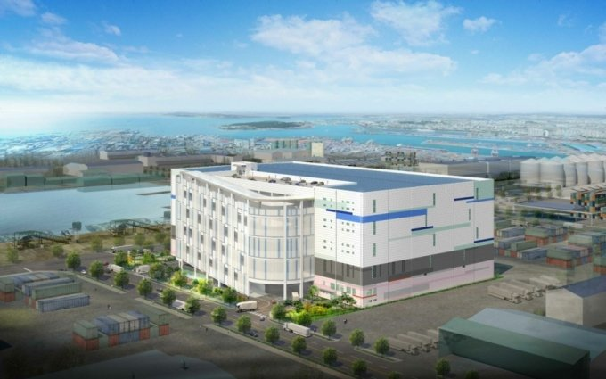
[수주소식]
쿠팡 인천21
물류센터 대수선공사
2022. 05
㈜엑스플러스건축사사무소가 쿠팡 인천21 물류센터 대수선공사 용역을 수주하였습니다.
대상 건축물인 인천항동 티제이물류센터는 인천 남항 물류단지 내 연면적 기준으로 최대 규모의 저온시설로 신선물류 허브센터로 사용되고 있습니다.
물류센터 설계에 대한 전문적인 역량을 활용하여 발주처의 요구에 부합하도록 대수선공사 설계를 진행합니다.
[수주소식]
밀양 용전일반 산업단지
물류센터 사업계획
2022. 04
㈜엑스플러스건축사사무소가 밀양 용전일반 산업단지 물류센터 개발계획을 진행합니다.
해당 시설은 경남의 물류거점인 김해·양산과 인접하여 있으며, "부울경 메가시티" 및 대구광역시 등 풍부한 수요를 갖추고 있습니다.
㈜엑스플러스건축사사무소의 다년간에 걸친 프로젝트 관리와 계획·실시설계 경험에서 비롯된 역량을 기반삼아 경남권의 핵심적인 가치창출 자산을 계획합니다.
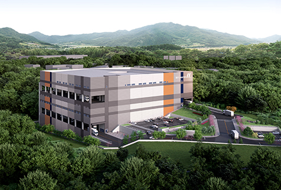
[수주소식]
안성시 미양면 강덕리
물류센터 설계용역
2022. 02
㈜엑스플러스건축사사무소가 설계한 안성시 미양면 강덕리 물류센터 신축공사 설계용역을 수주하였습니다.
당 물류센터는 약 2만5천평 규모로 남안성IC와 평택제천고속도로와 인접하여 높은 접근성을 가지고 있으며,
인근에 위치한 안성 산업단지와 다수의 타 산업단지에 효율적인 물류서비스를 제공할 것으로 기대됩니다.
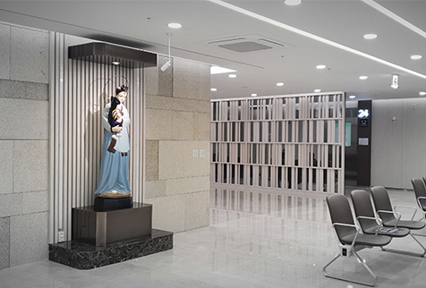
[언론보도]
여의도성모병원
안과병원 준공소식
2022. 01
㈜엑스플러스건축사사무소가 설계한
여의도성모병원 안과병원이 지난 1월 1일 확대개편되어 개원하였습니다.
백내장, 녹내장, 망막 등 복합적 안질환을 겪는 환자가 당일 안과 세부 전문의들의 진료를 한번에 받을 수 있는 ‘원스톱 진료’ 시스템이 구축되어있으며,
이를 지원하는 최적의 동선과 환자 및 의료진의 편안함을 고려한 공간 계획을 진행하였습니다.
[ 언론보도 바로가기 ]
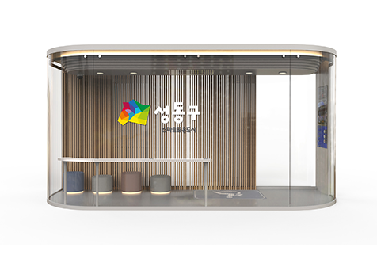
[수주소식]
성동형 스마트쉼터
소형 표준설계
2021. 11
㈜엑스플러스건축사사무소가 성동형 스마트쉼터(소형) 표준설계
를 수주하였습니다. 성동형 스마트쉼터는 사물인터넷(IoT) 기술과 정보통신기술(ICT)을 접목한 미래형 버스승차대로
지난 1년동안 106만명이 넘는 성동구민에게 편의를 제공하였습니다. 더 많은 곳에서 시민들께 편의를 제공하기 위해 소형 표준설계를 진행합니다.
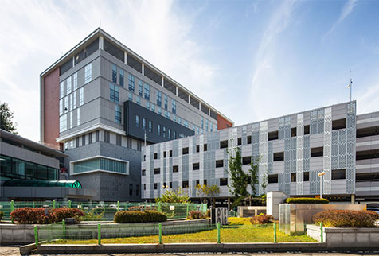
[수주소식]
한국원자력의학원
악티늄 생산시설 구축
2021. 10
㈜엑스플러스건축사사무소가 한국원자력의학원과 국가방사선비상진료센터 악티늄 생산시설 구축
설계용역계약을 체결하였습니다. 한국원자력의학원은 본 시설을 통해 치료용 방사성동위원소 악티늄을 국내 최초로 본격적으로 생산합니다.
관련법령과 관련규정을 준수하며, 안전하고 유지관리가 용이한 공간 구성을 위해 전문적인 설계를 진행할 예정입니다.
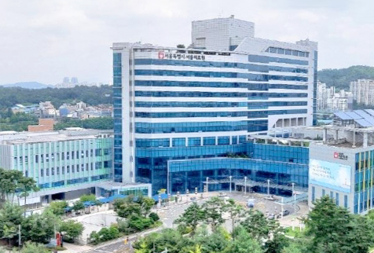
[수주소식]
서울의료원 심뇌혈관센터
외 외래재배치 기획설계
2021. 09
㈜엑스플러스건축사사무소가 서울의료원 심뇌혈관센터 외 외래재배치 기획설계
용역계약을 체결하였습니다. 인증 기준에 따른 우수한 센터 조성과, 공간이전에 따른 유휴공간을 최대한
활용할 수 있도록 설계를 진행합니다..
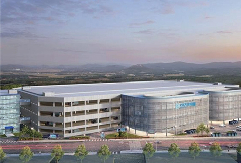
[수주소식]
포스코ICT 한진택배
자동화설비 구축사업
2021. 08
㈜엑스플러스건축사사무소가 포스코ICT 한진택배 자동화설비 구축사업 강 구조물
설계용역을 수주하였습니다. 한진의 메가허브 물류센터는 4만 5천평 규모의 대형 물류센터로, 포스코ICT와의 협력을 통해 전 과정
자동화설비 시스템이 구축될 첨단 물류센터입니다. 당 물류센터의 효율적 운영을 지원하기 위한 최적의 건축설계를 진행합니다.
[수주소식]
한국원자력의학원
방사선비상진료센터
2021. 08
㈜엑스플러스건축사사무소가 국가방사선비상진료센터 방사선비상진료실 및 음압시설 구축 설계용역을 수주하였습니다.
방사능 감염환자와 감염병 환자를 안전하고 신속하게 치료할 수 있도록
해당 시설에 대해 체계적이고 전문적인 설계를 진행 할 것입니다.
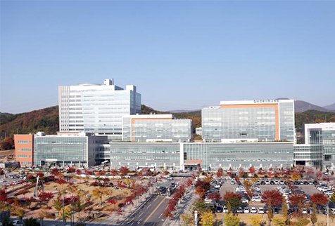
[수주소식]
칠곡경북대학교병원
응급실 음압병실
2021. 08
㈜엑스플러스건축사사무소가 칠곡경북대학교병원 응급실 음압병실 설계용역을 수주하였습니다.
설치 시공기준과 현장여건에 대한 충분한 고려, 평면 배치와 설비공사에 대한 철저한 검토를 통해
감염병 시에도 선진화 된 의료체계가 잘 적용될 수 있도록 계획하고 있습니다.
[공지사항]
XPLUS건축사사무소
창립 5주년 기념식
2021. 08
㈜엑스플러스건축사사무소가 창립 5주년을 맞이하였습니다.
5년동안 진행한 많은 프로젝트에서 긍정적인 성과를 거두며 신뢰할 수 있는 기업으로 자리잡게 되었습니다.
㈜엑스플러스건축사사무소는 건설과정 전반에 대한 TOTAL SERVICE를 제공하며 새로운 도약을 준비하고 있습니다.
함께해 주신 모든 분들께 진심으로 감사드립니다.
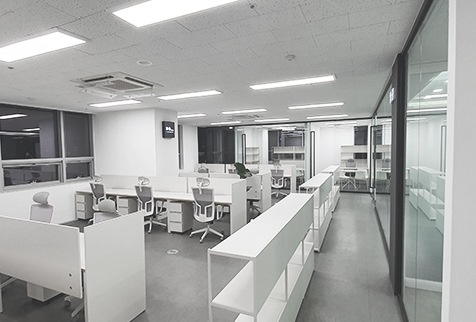
[공지사항]
XPLUS건축사사무소
사무실 확장이전
2021. 07
엑스플러스건축사사무소가 더 나은 서비스를 제공하기 위하여 2021년 7월 15일부로 사무실을 확장이전 하였습니다.
항상 진심으로 함께하며, 지속적으로 성장하고 발전하는 엑스플러스건축사사무소가 되겠습니다.
함께 해주신 모든 분들께 감사드립니다.
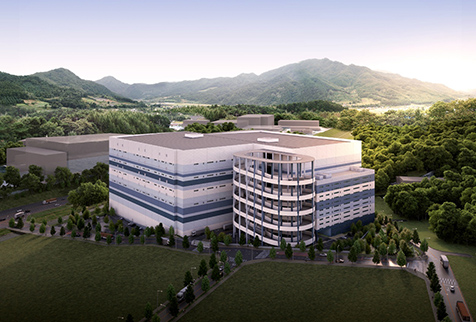
[수주소식]
에코장안 일반산업단지
물류센터 설계용역
2021. 06
㈜엑스플러스건축사사무소가 에코장안 일반산업단지 물류센터
설계용역을 수주하였습니다. 당 물류센터는 친환경 산단으로 조성될 에코장안산업단지의 물류의 중심이 되는 허브로서,
해당 산업단지의 발전을 위해 최적의 기능을 할 수 있도록 계획되고 있습니다.
[수주소식]
구로성심병원
환경개선공사 설계용역
2021. 06
㈜엑스플러스건축사사무소가 구로성심병원 환경개선공사 설계용역을 수주하였습니다.
철저한 플래닝을 통해 의료진과 내원객의 불편함 없이 환경개선공사를 진행할 수 있도록 계획합니다.
내부 인테리어 디자인과 편의공간 개선을 통해 더욱 편안하고 쾌적한 의료공간으로 거듭날 예정입니다.
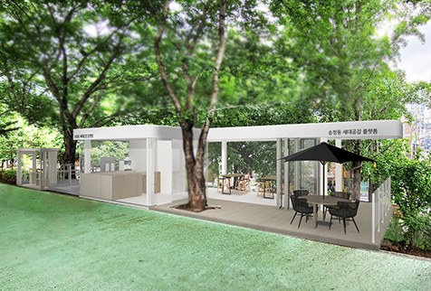
[수주소식]
송정동 도시재생
마중물사업 설계용역
2021. 05
㈜엑스플러스건축사사무소가 성동구청과 송정동 도시재생 마중물사업
설계용역계약을 체결하였습니다. 송정동 지역의 특성을 살린 도시재생 앵커시설 조성 및 편의시설을 확충을 통해
지역주민의 복리 증진에 기여할 것입니다.
[수주소식]
인천시 미추홀구 용현동
더나눔병원 CS용역 계약
2021. 05
㈜엑스플러스건축사사무소가 인천시 더나눔병원 CS용역계약을 체결하였습니다.
2021년 7월부터 착공하여 건설현장의 안전사고를 확실히 예방할 수 있도록 세심하게 안전관리를 진행하며,
또한 높은 품질의 건축물 준공을 위해 철저한 검수와 현장관리를 진행합니다.
[수주소식]
원자력병원 항암주사조제실
이전 구축 설계용역
2021. 04
㈜엑스플러스건축사사무소가 한국원자력의학원과 원자력병원 항암주사조제실 이전 구축
설계용역계약을 체결하였습니다. 항암주사조제실 조성을 위한 요구사항을 충족시키는 전문성 있는 계획을 통해
성공적으로 확충공사를 완료할 예정입니다.
[수주소식]
여의도 성모병원 안과병원
조성공사 설계용역 계약
2021. 02
㈜엑스플러스건축사사무소가 학교법인 가톨릭학원과 가톨릭대학교 여의도성모병원 안과병원 조성공사
설계용역계약을 체결하였습니다. 2021년 상반기에 현장조사, 설계 및 협의를 진행하여 2021년도
내에 준공할 예정입니다. 본 공사를 통해 최고의 안과센터로 거듭날 예정입니다.
[공지사항]
XPLUS건축사사무소
2021년도 워크샵
2021. 01
㈜엑스플러스건축사사무소가 2021년 사내 워크샵을 가졌습니다.
직원 간 협업 방침과 업무 효율화 방안, 사내 문화 형성 방향성와 관련하여 논의하였습니다.
2021년동안 더욱 좋은 결과를 이끌어내기 위해 논의한 방침을 시행할 예정입니다.
[언론보도]
성동형 스마트쉼터
준공소식 언론보도
2020. 08
㈜엑스플러스건축사사무소가 설계한
성동형 스마트 쉼터가
2020년 8월 초 성동구청 앞을 비롯하여 버스 승차 인원이 많은 버스정류소 10개소에
준공 완료되었습니다. 개방감을 극대화한 디자인과 스마트 IoT 기술이 적용되어 성동구 시민의 편의에 기여할 예정입니다.
[ 언론보도 바로가기 ]
[공지사항]
XPLUS건축사사무소
창립 4주년 기념식
2020. 08
㈜엑스플러스건축사사무소가 창립 4주년을 맞이하여 4주년 기념식을 진행하였습니다.
그동안 책임감과 열정, 열린사고로 일하여 더 많은 곳에서 긍정적인 성과를 거두었습니다.
함께해 주신 모든 분들과 같이, 더 나은 한해를 계획하고 이루어가고 있습니다.
감사합니다.
[언론보도]
여의도성모병원 리모델링
준공소식 언론보도
2020. 07
㈜엑스플러스건축사사무소가 설계한
가톨릭대학교 여의도성모병원의 BMT·일반병실 및 검진센터
리모델링 공사가 6월 준공되었습니다. 본격적 운영은 8월부터 시작되며, 병상 수 확충 및
BMT 치료실 확보를 통해 더욱 전문적인 의료시설로 거듭날 예정입니다.
[ 언론보도 바로가기 ]
[수주소식]
천호동 주택 신축공사
건축공사감리 계약
2020. 07
㈜엑스플러스건축사사무소가 천호동 주택 신축공사 감리계약을 체결하였습니다.
2020년 하반기에 착공 시 CS업무를 진행하며 건축주, 시공사와의 상호협력을 통해
체계적으로 품질 및 안전을 관리하며 높은 품질의 준공을 이끌어 낼 예정입니다.
[수주소식]
인천시 미추홀구 용현동
종합병원 설계용역 계약
2020. 06
㈜엑스플러스건축사사무소가 인천시 종합병원설계용역을 체결하였습니다.
2020년 6월부터 PM업무, 설계업무, CM업무를 진행하여 성공적으로 준공 할 예정입니다.
종합적인 의료계획을 통한 우수한 병원을 건립하는데 목표를 두고 있습니다.
[MOU체결]
㈜포스코건설과
업무협약 체결
2020. 02
㈜엑스플러스건축사사무소와 ㈜포스코건설(플랜트사업본부)는 향후 물류시설 관련 사업을 추진함에 있어 건축 설계업무
시공업무를 상호 긴밀히 협력하여 추진할 수 있는 관계체계를 마련하고자, 이에 당사자 간 사업협력을 위한
상호신뢰를 바탕으로 협약을 체결하였습니다.
[수주소식]
여의도성모병원 BMT·
일반병실 및 검진센터
리모델링 용역 계약
2020. 02
㈜엑스플러스건축사사무소가 가톨릭대학교 여의도성모병원의 BMT·일반병실 및 검진센터
리모델링 용역계약을 체결하였습니다. 2020년 1분기에 설계 및 협의를 거쳐, 2020년도
상반기 내 공사를 완료할 예정입니다.
[공지사항]
XPLUS건축사사무소
2020년도 워크샵
2020. 01
엑스플러스건축사사무소에서 지산리조트에서 2020년 사내 워크샵을 가졌습니다.
업무효율 증진 방안과, 성과와 업무를 서로 공유하는 방안에 대해 논의하였습니다.
본 워크샵을 통해, 구성원 전체가 함께 발전하는 한 해를 위한 토대를 마련하였습니다.
[공지사항]
XPLUS건축사사무소
창립 3주년 기념식
2019. 08
엑스플러스건축사사무소가 창립 3주년을 맞이하였습니다.
창립 3주년 기념식을 진행하였으며, 임직원 일동 및 사내외 이사가 참석해주셨습니다.
함께해주신분들께 진심으로 감사드리며, 지속적으로 성장하고 발전하는 엑스플러스건축이 되도록 노력하겠습니다.
감사합니다.
[수주소식]
양지유통업무설비
공동집배송시설
설계 및 PM 계약
2019. 04
2019년 초 1단계 현장준공 후 사용승인 된 양지유통업무설비 창고 A에 이어서 진행되고 있는,
2단계 사업인 공동집배송센터에 대해, 4월 계약을 완료하였습니다. 양지유통업무설비 공동 집배송센터는
집배송시설, 물류터미널, 편익시설, 관리시설 및 부대시설을 갖춘 국가유통산업 기반시설로서 거듭날 예정입니다.